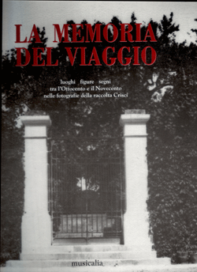
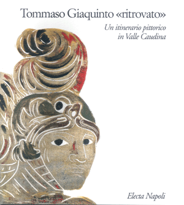
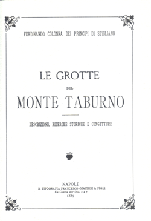
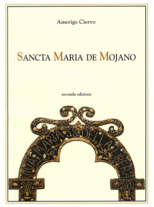
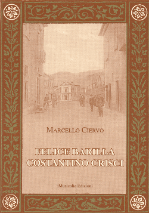
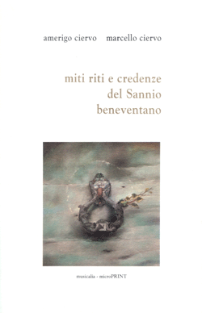
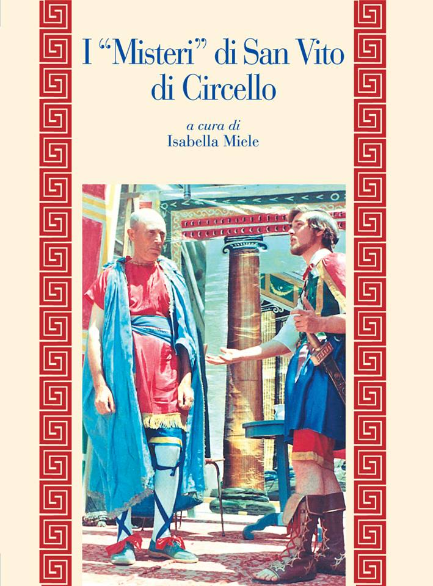
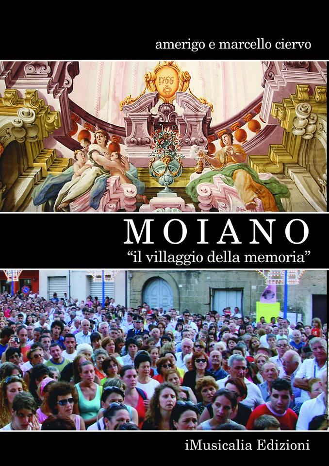
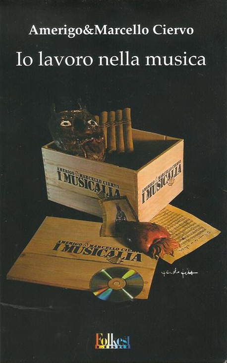

<div class="modal-dialog">
    <div class="modal-content">
        <div class="modal-header">
            <button type="button" class="close" data-dismiss="modal" aria-hidden="true">
                
                <span class="glyphicon glyphicon-remove"></span>
            </button>
            <h3 class="modal-title">I libri</h3>

        </div>
        <div class="modal-body">
            <h4>Libri pubblicati</h4>
            <div class="row">
                <div class="col-lg-12">
                    <ul>
                        <li>Amerigo Ciervo,<i> Sancta Maria de Mojano.
                                Musicalia. 1982 </i></li>
                        <li>AA.VV. Musicalia, <i>Storia, musica e teatro popolare</i>.
                            Musicalia. 1984</li>
                        <li>Amerigo&amp;Marcello Ciervo, <i>Quaraesima &egrave;
                                fernuta&#133;</i> Musicalia. 1989</li>
                        <li>A.&amp;M. Ciervo, <i>Miti riti e credenze del
                                Sannio beneventano</i>.Musicalia.1991</li>
                        <li>AA.VV. <i>Tommaso Giaquinto &#148;Ritrovato&#148;.</i>
                            Electa Napoli. 1993</li>
                        <li>Amerigo&amp;Marcello Ciervo, <i>Il sistro e il
                                bistro.</i> Musicalia. 1994</li>
                        <li>A&amp;M. Ciervo e G. Porrino, <i>La memoria del
                                viaggio</i>. Musicalia. 1995</li>
                        <li>A&amp;M Ciervo (a cura) Ferdinando Colonna dei Principi di Stigliano,
                            <i>Le grotte del Taburno</i>, <i>Napoli - F.Giannini 1889</i>, <br>ristampa
                            anastatica in <i>Le risorse della memoria</i>, Benevento 2002.</li>
                        <li>Amerigo Ciervo <i>Sancta Maria de Mojano (Seconda edizione riveduta ed ampliata), </i>Edimedia,
                            in <i>Le risorse della memoria</i>, Benevento 2003.</li>
                        <li>Marcello Ciervo  <i>Felice Barilla - Costantino Crisci, </i>iMusicalia Edizioni, in <i>Le risorse della memoria</i>, 2006.</li>

                        <li>Amerigo e Marcello Ciervo, <i>Io lavoro nella musica</i>, Folkest edizioni, Spilimbergo, 2007.</li>
                        <li>Amerigo e Marcello Ciervo, <i>Moiano, la memoria del villaggio</i>, edizioni iMusicalia, Benevento, 2011.</li>
                        <li>(a cura di) Isabella Miele, <i>I misteri di San Vito di Circello</i>, edizioni iMusicalia, Benevento, 2013.</li>

                    </ul>
                </div>
                <hr>

            </div>
            <h4>Le copertine</h4>
            <div class="row">
                <div class="col-lg-4">
                    
                </div>
                <div class="col-lg-4">
                    
                </div>
                <div class="col-lg-4">
                    
                </div>
            </div>
            <div class="row">
                <div class="col-lg-4">
                    
                </div>
                <div class="col-lg-4">
                    
                </div>
                <div class="col-lg-4">
                    
                </div>
            </div>
            <div class="row">
                <div class="col-lg-4">
                    
                </div>
                <div class="col-lg-4">
                    
                </div>
                <div class="col-lg-4">
                    
                </div>
            </div>
        </div>
    </div><!-- /.modal-content -->
</div><!-- /.modal-dialog -->
